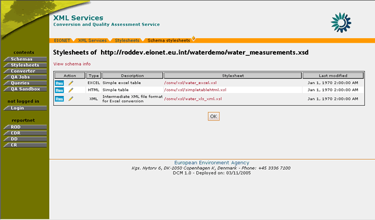
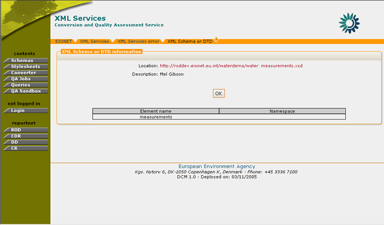
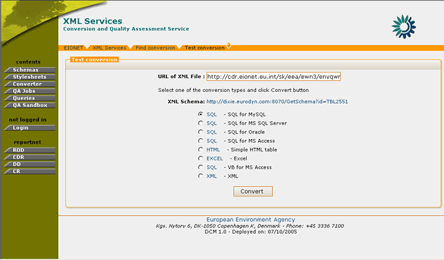
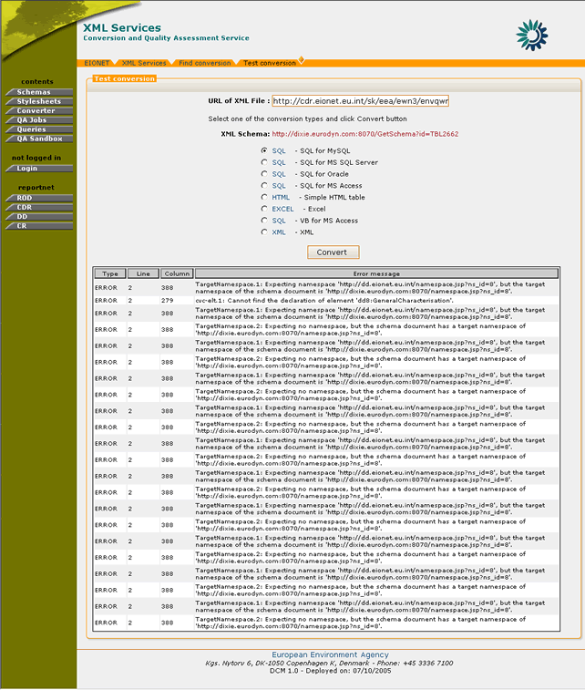
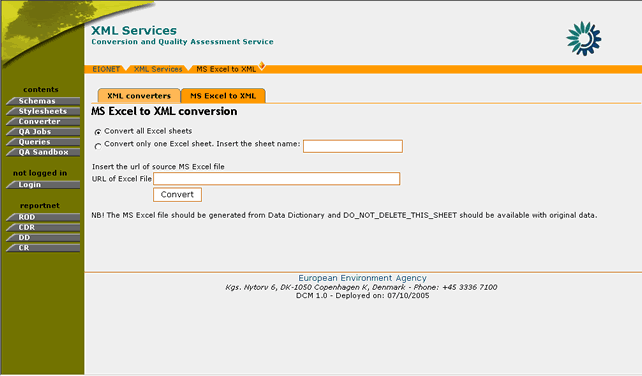

The user module section describes the set of DCM operations and functions, which are available to simple non-administrator users. This set of functions allows REPORTNET users to access XML Schema and stylesheet information and perform adhoc conversions of XML documents. This set of functions is comprised of the following:
In the “Schemas” section, the user may view all the XML Schemas that are not directly imported by the Data Dictionary and their corresponding XSL Stylesheets.
Figure 19: A user can access the Schemas section without being logged in.
The user may download the XML schemas presented in this section. This can be accomplished by selecting the corresponding schema URL. A new window with the contents of the XML file will be displayed. Subsequently, the user may choose to save the schema info.

Figure 20: XML Schema download
For each of the XML Schemas that are encoded in DCM, the administrators can upload one or more XSL stylesheets. These stylesheets are responsible for the conversion of submitted files in a specified output type.
DCM directly imports predefined XML Schemas along with their Stylesheets from the REPORTNET Data Dictionary. In addition to those imported elements, the system also allows the definition of user defined XML Schemas and Stylesheets. Both types of information are available in the Stylesheets section of DCM. The user-defined conversions are denoted as “Handcoded conversions” whereas the predefined schemas are found under the heading “Generated conversions from Data Dictionary tables”

Figure 21: Handcoded Vs Data Dictionary generated conversions
For both types of conversions, the user may view the following information:
In addition to this information, the Data Dictionary conversions include additional data such as the Data Dictionary Table name and Dataset of the XML Schema. This information helps the user to better identify the XML schemas.
For each XML Schema entry appearing in the Stylesheets section of DCM either imported from DD or Handcoded, the user has the possibility to get a detailed view of the stylesheets assigned to it.
In order to do this, the user must perform the following steps:
STEP 1 – Browse to Data Conversion Module
This feature does not require user authentication.
STEP 2 – Click on “Stylesheets” button on the navigation bar.
STEP 3 – Click the “View Stylesheets” button.
For each entry in the Stylesheets section, the user may click on the “view stylesheets” icon
in order to receive more details regarding the available stylesheets.

Figure 22: Schema Stylesheets page
Step 4 – View Stylesheet information
The information available in this section for the user is:
- Output type. This indicates the result of the conversion
- Description. Some additional text related to the purpose and usage of the stylesheet.
- Stylesheet. The URL of the XSL file. By clicking this URL, the user can download the selected stylesheet.
- Date of last modification
In addition, the user can perform the following set of actions:
- Run a conversion (see section 4.3.2)
- View schema information (this is only available for Handcoded conversions).
Step 5 – Return to Stylesheets section
By pressing the OK button, the user will be redirected to the Stylesheets section.
In summary:
Step |
View Stylesheets |
1 |
Browse to DCM |
2 |
Click on “Stylesheets” button |
3 |
Click on “view stylesheets” action |
4 |
View stylesheet information |
5 |
Return to “Stylesheets” section |
The DCM allows the user to perform adhoc conversions of XML files by running any of the available stylesheets.
In order to do this, the user must perform the following steps:
STEP 1 – Browse to Data Conversion Module
This feature does not require user authentication.
STEP 2 – Click on “Stylesheets” button on the navigation bar.
STEP 3 – Click the “View Stylesheets” button.
For each entry in the Stylesheets section, the user may click on the “view stylesheets” icon
Figure 23: Schema Stylesheets page
Step 4 – Select “Run stylesheet”
By selecting the “run stylesheet” icon
, the user may perform a test conversion of an XML file according to the selected stylesheet.
Step 5 – Insert XML URL and select Stylesheet
The user arrives at the “Test conversion” page where he/she must insert the URL of the XML file that is to be converted and select the stylesheet according to which the conversion will be performed.
All the stylesheets of the XML schema are available, but by default, the stylesheet which was selected in STEP 4 will be selected initially.
Step 6 – Run test conversion
By selecting the “Convert” button, the user invokes the conversion and the result of this operation will be displayed in a new browser window.
Important Note: In case of mismatch of the XML file and the selected stylesheet, an error message will be displayed to the user notifying that the conversion could not be completed.

Figure 24: Test conversion functionality
In summary:
Step |
Test Run Stylesheets |
1 |
Browse to DCM |
2 |
Click on “Stylesheets” button |
3 |
Click on “view stylesheets” action |
4 |
Select “Run Stylesheet” |
5 |
Insert XML URL and select Stylesheet |
6 |
Run test conversion |
The user has the ability to view some extra information regarding the XML schema accessed while viewing the list of stylesheets. In this page the user may view the schema’s URL, its description as well as its user-defined root elements. This option is only available for Handcoded conversions since the stylesheets imported from the Data Dictionary do not have such information.
In order to view this XML Schema information, the user must perform the following steps:
STEP 1 – Browse to Data Conversion Module
This feature does not require user authentication.
STEP 2 – Click on “Stylesheets” button on the navigation bar.
STEP 3 – Click the “View Stylesheets” button.
For each entry in the Stylesheets section, the user may click on the “view stylesheets” icon

Figure 25: XML Schema or DTD information page
Step 4 – View Schema information
By selecting the “View Schema info” option, the user is redirected to the “XML Schema or DTD” page where the following information is displayed:
- Schema location: The URL of the XML schema
- Description: A short description of the XML schema
- DTD information: This displays a list of the user-defined root elements of the XML Schema.
In summary:
Step |
View XML Schema Information |
1 |
Browse to DCM |
2 |
Click on “Stylesheets” button |
3 |
Click on “view stylesheets” action |
4 |
View Schema information |
The “Converter” functionality allows the DCM users to perform conversions of XML files to any format available through the defined stylesheets or convert Excel files generated by the Data Dictionary to XML.
In the case of XML files conversion, the system supports the conversion according to both uploaded XML Schemas and schemas imported by the Data Dictionary. In addition, it supports the validation of the submitted XML file against the selected XML schema. By using the validation functionality, the user may check if the submitted XML matches the selected XML schema. In order for the conversion to be completed successfully, the validation operation should return no errors. In case however such errors occur, the user should reconsider the XML schema selection, as it is very possible that the conversion will not yield the expected output or it will not be completed successfully.
As mentioned in section 4.4.1, the XML converter functionality allows the DCM users to perform conversions of XML files against all XML schemas and their associated stylesheets.
In order to do so, the DCM user must go through the following steps:
STEP 1 – Click on “Converter” button on the navigation bar.
In order to perform an XML file conversion, the user must select the “XML Converters” tab.
STEP 2 – Insert conversion parameters
The user must specify the following information:
- URL of XML file. This is the URL of the file to be converted
- Select the XML Schema according to which the conversion is going to be performed.
- Select to validate the file before conversion or not.
The validation option will check for the consistency of the submitted XML file against the selected XML Schema.

Figure 26: Profile Channels
STEP 3 – Get available conversions
After the submission of the required parameters, the user receives a list of the available conversions. This list corresponds to the available stylesheets for the XML schema, which was selected.
The user must subsequently select the desired output type and press the “Convert” button.

Figure 27: Available XML file conversions
STEP 4 – Get converted file
After the “Convert” button has been selected, the user will receive the XML file converted to the output type selected in STEP 4.
However, if the submitted XML file did not match the XML Schema’s expected structure, it is very possible that the conversion will either be erroneous or will create an error such as the one in Figure 28.
In order to avoid such errors the users may choose to validate their XML files before proceeding with the actual conversion. For more information on validation, please see section 4.4.3.

Figure 28: XML file conversion error
In summary,
Step |
XML Conversion |
1 |
Click on “Converter” button on the navigation bar. |
2 |
Insert conversion parameters |
3 |
Get available conversions |
4 |
Get converted file |
As mentioned in section 4.4.1, DCM offers validation functionality for the XML files which are to be converted. The validation of the XML file indicates whether the XML file under question can be converted according to the specified XML Schema.
In order to perform an XML file validation, the DCM user must go through the following steps:
STEP 1 – Click on “Converter” button on the navigation bar.
In order to perform an XML file conversion, the user must select the “XML Converters” tab.
STEP 2 – Insert conversion parameters
Insert the URL of the XML file, select the XML Schema for the conversion and also select the “validate” option.

Figure 29: XML conversion dialogue with enabled validation
STEP 3 – Receive results of Validation
After selecting the “List” button on the “Find conversions” page, the system will begin the validation process of the submitted XML file. This may take more time to complete than a standard conversion but finally, the user will be redirected to the list with the available conversions for the selected XML schema.
If the validation of the XML file was successful, then the user will be allowed to proceed normally with the XML conversion.
However, if the file validation returns errors, these will be displayed to the user as in Figure 30.

In summary,
Step |
Validation of XML file |
1 |
Click on “Converter” button |
2 |
Insert conversion parameters |
3 |
Receive results of Validation |
DCM offers the possibility to the user to convert MS Excel files to XML.
In order to perform this conversion, the DCM user must go through the following steps:
STEP 1 – Click on “Converter” button on the navigation bar.
In order to perform an XML file conversion, the user must select the “MS Excel to XML” tab.
STEP 2 – Insert conversion parameters
The DCM user must insert the following values:
- URL of Excel file. The source file to be converted to XML
- Select whether to convert all Excel sheets or just one of them (in case just one sheet needs to be converted, its name is required).

Figure 31: Excel file conversion
STEP 3 – Press “Convert” button
After all the conversion parameters have been set, the user may select the “Convert” button in order for the operation to be completed.
Important Note: This functionality is designed to parse and convert only files which are generated by the Data Dictionary. If the submitted Excel file does not meet this requirement, the conversion procedure will be terminated with an error.

Figure 32: Example Excel to XML conversion
In summary,
Step |
Excel to XML conversion |
1 |
Click on “Converter” button |
2 |
Insert conversion parameters |
3 |
Press “Convert” button |